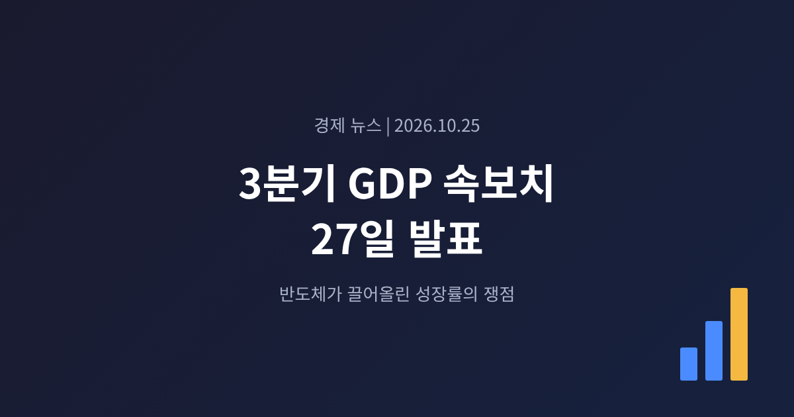
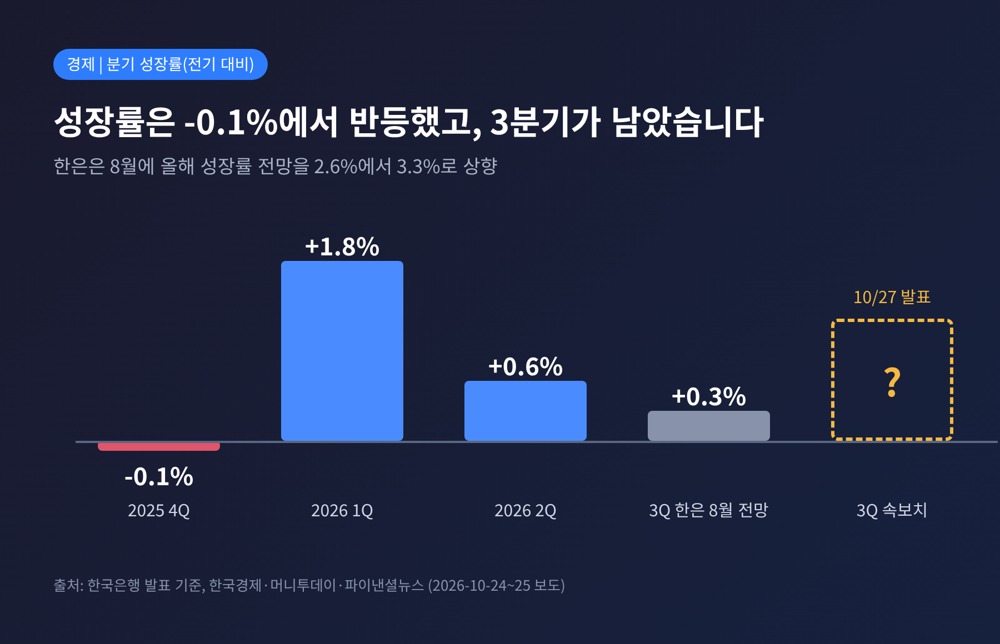
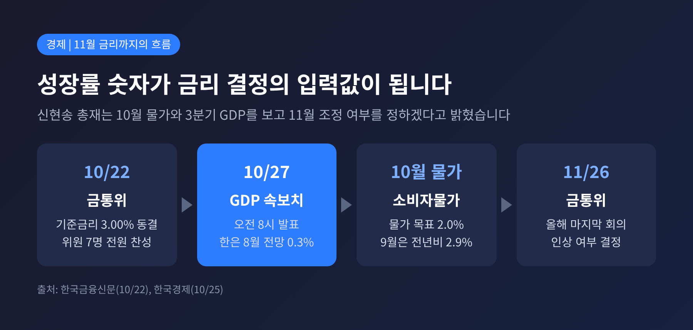
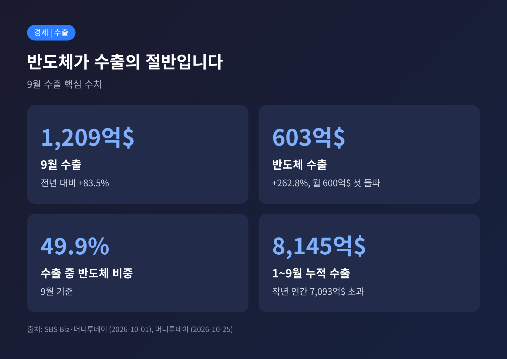
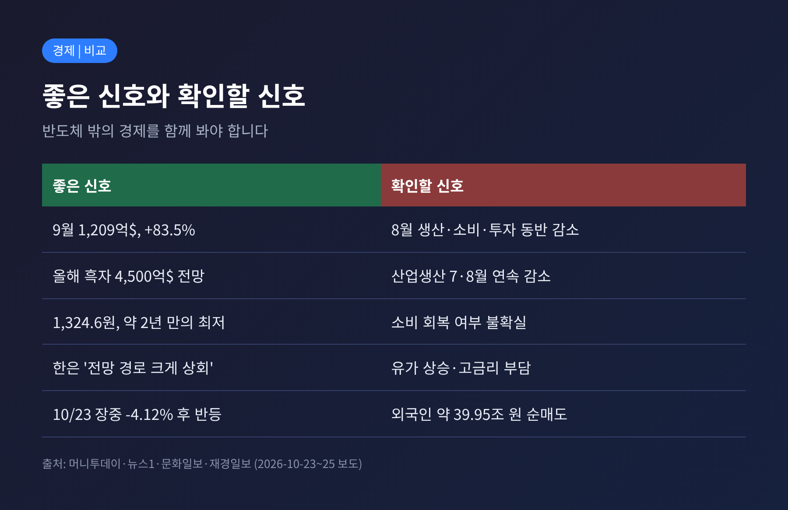
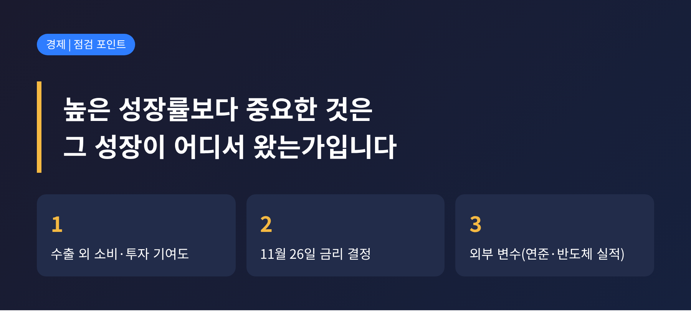

경제 뉴스 | 2026-10-25
세 줄 요약 - 한국은행이 10월 27일 오전 8시 3분기 GDP 속보치를 발표합니다. 한은의 8월 전망은 전기 대비 0.3%였습니다. - 반도체 수출이 예상을 웃돌아 실제 수치가 더 높을 것이라는 관측이 우세합니다. 이 숫자는 11월 금리 결정의 근거가 됩니다. - 산업생산·소비·투자가 8월에 함께 줄었다는 점은 여전히 확인이 필요한 부분입니다.
이번 글에서는 27일 발표를 앞두고 한국 경제가 어떤 지점에 서 있는지 정리해 보겠습니다. 10월 22일 금융통화위원회의 동결 결정, 흔들린 증시와 환율, 수출 수치를 한 흐름으로 묶어 보았습니다. 발표 결과는 아직 나오지 않았으므로, 이 글은 전망과 쟁점을 다룹니다.
한국은행은 27일 3분기 실질 GDP 속보치를 공개합니다. 속보치는 분기가 끝난 뒤 가장 먼저 나오는 성장률 수치입니다.
비교 기준은 이렇습니다. 지난해 4분기는 전기 대비 -0.1%였습니다. 올해 1분기는 1.8%로 크게 반등했고, 2분기는 0.6%였습니다. 한은은 8월 27일 경제전망에서 올해 성장률을 2.6%에서 3.3%로 올렸고, 3분기는 0.3%로 내다봤습니다.
그런데 10월 22일 한은의 경제상황 평가는 결이 달랐습니다. 국내 경제가 이전 전망 경로를 크게 웃도는 성장세를 보일 것이라고 밝혔습니다. 금통위는 올해와 내년 성장률 모두 8월 전망치(3.3%, 2.9%)를 크게 웃돌 것으로 봤습니다. 시장이 0.3%를 넘는 수치를 기대하는 이유입니다. 서울경제는 시장이 0%대 후반을 예상한다고 전했습니다. 다만 다른 매체들은 구체적인 예상치를 제시하지 않았으므로, 이 숫자는 참고 정도로 보시는 편이 좋겠습니다.

이번 숫자가 주목받는 까닭은 통화정책과 직접 닿아 있기 때문입니다.
신현송 한은 총재는 10월 소비자물가와 3분기 GDP를 확인한 뒤 11월 기준금리 조정 여부를 정하겠다고 밝혔습니다. 올해 마지막 금통위는 11월 26일입니다. 성장률이 높게 나오면 추가 인상 쪽에 무게가 실릴 수 있습니다.
10월 22일 금통위는 기준금리를 연 3.00%로 동결했습니다. 7명 위원 전원이 동결에 찬성했습니다. 7월과 8월 연속 인상 뒤 첫 동결이어서 시장에서는 '숨 고르기'로 읽었습니다. 9월 소비자물가는 전년 동월 대비 2.9%로, 물가안정 목표 2.0%를 웃돌고 있습니다.
금통위 결정문은 추가 인상의 시기와 속도를 물가와 경기, 금융안정 상황을 점검하며 정하겠다는 조건부 입장이었습니다. 머니투데이가 전문가 11명에게 물은 결과, 8명이 11월 3.25% 인상을 예상했고 9명은 인상 사이클의 종점을 3.50%로 봤습니다.

성장률 기대의 중심에는 수출이 있습니다. 9월 수출은 1,209억 달러로 전년 대비 83.5% 늘었습니다. 이 가운데 반도체가 603억 달러로 262.8% 증가했습니다. 월간 반도체 수출이 600억 달러를 넘은 것은 처음이며, 직전 최고였던 8월의 467억 달러를 크게 넘었습니다. 전체 수출에서 반도체 비중은 약 49.9%입니다.
1~9월 누적 수출은 8,145억 달러로, 지난해 연간 수출액(7,093억 달러)을 이미 넘어섰습니다. 올해 수출 1조 달러 달성도 거론됩니다.
예전엔 환율 급등이 수출 기업의 이익을 부풀렸습니다. 지금은 반대 흐름입니다. 원/달러 환율은 6월 30일 고점 1,549.4원에서 10월 23일 1,324.6원으로 220원 넘게 내려와 약 2년 만의 최저 수준입니다. 한은은 올해와 내년 경상수지 흑자를 각각 4,500억 달러, 4,300억 달러로 내다봤고, 이는 GDP 대비 20% 안팎에 해당합니다. 달러가 들어오는 구조가 원화 강세를 받치고 있는 셈입니다.

수출이 좋다고 경제 전반이 좋은 것은 아닙니다. 지적되는 부분이 있습니다.
산업생산은 7월과 8월 연속 전월 대비 감소했습니다. 8월에는 생산, 소매판매, 설비투자가 함께 줄어 '트리플 마이너스'가 나왔습니다. 정부는 이를 일시적 현상으로 보고 견조한 회복 흐름이라고 진단했습니다. 9월 산업활동동향은 30일에 공개됩니다.
3분기 성장의 내용도 따져봐야 합니다. 머니투데이는 반도체를 제외한 경제 상황, 특히 소비를 확인해야 한다는 양준석 가톨릭대 교수의 말을 전했습니다. 중동 사태에 따른 유가 상승, 고용 불안, 고금리가 체감경기를 누를 수 있다는 지적도 함께 나왔습니다.
증시는 이 불안을 그대로 보여줬습니다. 10월 8일 코스피는 사흘째 하락해 장중 6,700선이 무너졌습니다. 23일에는 미국 기술주 급락(나스닥 -2.60%, 필라델피아반도체지수 -6.72%)의 여파로 장중 4.12% 떨어진 5,305.98까지 밀렸다가, SK하이닉스의 솔리다임 미국 상장 추진 중단 소식에 5,550.30(+0.30%)으로 마감했습니다. 외국인은 9월 1일부터 10월 23일까지 약 39조 9,500억 원어치를 순매도했습니다.

첫째는 성장의 구성입니다. 수출이 성장률을 끌어올렸더라도 소비와 설비투자가 따라왔는지에 따라 해석이 갈립니다. 2분기에는 반도체 중심 수출이 1.3%, 민간소비가 0.4% 증가했습니다. 이 비교가 기준이 될 것입니다.
둘째는 11월 금리입니다. 성장이 강하면 긴축 사이클이 유효하다는 시각이, 물가와 환율이 안정됐으니 서두를 이유가 없다는 시각이 맞섭니다. 대신증권은 성장 개선 속도와 물가를 근거로 긴축 유효론을, 신영증권은 인상 효과를 더 지켜봐야 한다는 쪽을 택했습니다. 두 입장 모두 근거가 있어서 결과를 단정하기 어렵습니다.
셋째는 외부 변수입니다. 같은 주에 미국 연준이 금리를 결정하고, 28일 SK하이닉스, 29일 삼성전자가 3분기 실적을 내놓습니다. 환율은 증권가에서 내년 1,250~1,420원, 일부는 상반기 1,200원대 진입 가능성까지 거론합니다. 반면 중국 CXMT의 D램 점유율 확대, AI 투자 둔화 우려, 중동 상황은 흑자 규모를 줄일 수 있는 위험으로 꼽힙니다.

정리하면 이렇습니다.
27일의 숫자는 한 분기의 성적표이면서, 11월 금리를 가늠하는 단서입니다.
"높은 성장률보다 중요한 것은 그 성장이 어디서 왔는가입니다."
발표가 나온 뒤에는 헤드라인 수치보다 소비와 투자의 기여도를 먼저 살펴보시길 권합니다. 결과가 예상과 달랐다면, 그때 다시 정리해 보겠습니다.
※ 이 글은 공개된 보도를 정리한 정보 제공용 해설이며, 투자 권유가 아닙니다. 투자 판단과 그 결과의 책임은 투자자 본인에게 있습니다. 본문의 전망치는 기관·매체의 예상이며 실제 발표와 다를 수 있습니다.
출처: 한국경제, 머니투데이, 파이낸셜뉴스(연합·뉴스1), 서울경제, 한국금융신문, 문화일보, 비즈니스코리아, 뉴스핌, SBS Biz, 재경일보 (2026-10-01~10-25 보도)